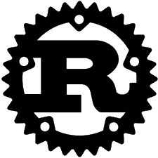

Rust
Rust is a versitale language based from C and C++. This allows it to be extreme cross platform and usable everywhere.
I currently use Rust and its my faviorite language. It is written imperatively, and is a high level langauge. However even though its a high level language its compiled to a low level binary which allows you to work with the machine itself alot, while the code is transparent for what is happening.
I personally use Rust for its easiness to compile and use anywhere, it doesnt require a virtual machine and can run on Linux, Windows and Macos easily.
I would rate this a 9/10, If you would like to get started using this, I would recommened checking out these few sites.
Rust Lang The Rust Documentation and Book.